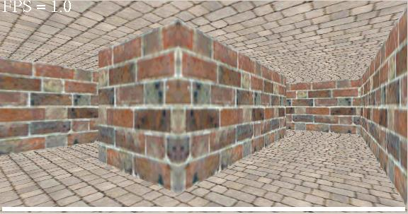

The Graph Data Structure
There are many ways of representing a graph data structure, and
the one chosen depends on the type of graph you need to represent
and what operations you plan to do on it.
The scene graph used in the 3D portal system is a strongly connected
and directed graph. It might be thought of as an undirected graph since
there are always two edges connecting every pair of adjacent nodes: one "from" and one "to".
This takes up more memory but makes the programming easier and the program faster.
The graph
is represented by a bunch of allocated cells and portals (or nodes and
directed edges, respectively), where each cell consists, in part, of
a collection of portals, and
each portal points to an adjacent cell. That's it. It's very simple.
There's not much else to say here except how this data-structure is
constructed and destroyed when no longer needed. (It's use is
covered in this page.)
So how is the graph data structure generated?
Well, there's no neat algorithm used by
the program to construct the graph. The scene graph is first
conceptualized, then drawn on a peice of grid paper. From there I
encoded all of the vertex data into an array of constructs that
the map loader can determine, allocate, and link with other constructs.
(I see now that I should have taken the time to write a map designer
program. But that's 20-20 hind-sight.)
A map construct refers in general to any type of object the program
creates, whether it's a cell, a health-pack, a snow-man, a portal,
a door, etc. A construct object is general enough to describe any feature
of any of these types of objects, such as vertex coordinates, texture IDs, references
to other constructs, color, texture coordinates, special flags, etc.
All of the objects created as an instance of any construct are all linked
together in some way
to form the entire scene graph, and the data is freed at end-of-level
by simply making a final pass through the construct array, freeing
all the objects created by the map loader. Note, however, that
the construct object is not a base class for all objects consisting
of, and linked together, to form the scene graph. Again, in hindsight,
I think I would have done it this way, but at the time this was
not how I decided to design the program. Oh well; it still worked out okay.
Spacial Paradoxes
First let me say that I'm not sure if the term "spacial paradoxes" is
appropriate, because I'm not sure that what follows is techniquely
a paradox, but it is the word I have already chosen long ago,
and so I'm stuck with it.
What's neat about the graph data structure, and the computer in general,
is that objects (or in this case environments) that may not be able to
exist in real time and space, are
easily internally represented by the computer, and are done so by
the graph data structure used in the 3D portal system.
There are two types of spacial paradoxes designed into the scene
graphs. The first of these is the idea that multiple cells
may simultaneously occupy the same space. The second is the idea that a single
cell can simultaneously occupy multiple spaces. To accomplish these affects,
another cell mode was devised. Initially, the 3D protal system was programmed
so that the position and orientation (rotation) of every cell in the graph was
fixed once the graph was initially constructed. This is refered to as static
cell mode in the program code. But to get the said paradoxes to work, the positions
and orientations of cells must be dynamicaly calculated with respect to one another, and
ultimately with respect to a root node within the graph at any given time.
This is refered to
as dynamic cell mode. This is because the root node is always changing over time as it
is always the node occupied
by the camera. In this mode, the root node is positioned at the origin and
given a rotation of zero. As the scene drawing algorithm traverses the graph
from one node
to an adjacent one, it calculates the position and orientation of that
entered node with respect to the node exited. In this way, at any given time,
only a subset of the set of all nodes in the graph, which make up a tree of nodes,
are ever forming a non-paradoxial scene graph from the user's perspective.
That is, until they move through the scene
graph and see how things are changing over time. Some figures of topological maps implimented in the 3D portal system will make all of this clearer.
Level 1 Map -- First off, this is a static map with no spacial paradoxes. There's no overlap and no duplication.
Level 2 Map A -- In this part of map level 2 you see
a zig-zag corridor intersecting a room. While in the room, however, you don't
see this corridor in the way. It's simply not there. But you know it must've
intersected the room because you used it to get there.
Level 2 Map B -- There's not much going on here so
I'll take this bullet to say that level 2 offers a weird spacial paradox experienced
by a dynamic portal patch in the scene graph. You look through a portal and see
one thing, turn around, flip a switch, then look again through the portal and see
something else.
Level 2 Map C -- This is an excellent example of how a cell, or more accurately, a room (which in this case is a collection of adjacent cells) can
occupy multiple spaces. You can see the large room duplicated several times. Some
duplicates are only incomplete because the stopping condition for the recursive algorithm
(when VSD is turned off) is only a set bit in the cell flags field.
Level 2 Map D -- This is an excellent example of how multiple cells can occupy the same space. You can also see a cell here with a red telepad in it that exists in multiple spaces, but there is only one telepad in the scene-graph. (I goofed on this image file. Only a partial is shown.)
Level 3 Map -- Again, here you can see a lot of duplication and overlap. In this map there are two corridors that run right through one another.
Level 4 Map -- What little overlap you can see here
is caused by the two parallel corridors of different lengths that share the same
end-points in space.
Screen-shot Examples of the Spacial Paradoxes in the Program
In this first screen-shot on the left, you can see the camera peering into
a cell with a switch in it and a locked door. The middle screen-shot
also peers into the cell, but from a perspective further to the right
and out a little bit. At this point you can see that the size of
cell through the open portal does not appear to match the size of the
enclosing walls. And lastly, the screen-shot on the right reveals the
complete shape of the enclosing walls, which is a small rectangle, obviously
smaller than the cell inside. When you run the program to see this
first hand, you'll notice quite a few glitches. But it works for
the most part. The problem is not in the scene graph representation
of the paradox, but in the clipping code.
In this next example we see a rectangular pillar from one end
in one screen-shot, and the other end in the other screen-shot. The
corridors on the left and right are of different lengths but
lead to the same place. This is easier to see if running the
program.
For this last example, you need to realize that from the first screen-shot to
the last, the camera is moving to the right and rotating so as to
keep looking at the same side of the winding corridor. What you're
supposed to see is that the winding corridor is self intersecting.
From any one perspective, things look okay, but as you move through
the corridor, the weird intersection can be perceived. Notice the
absolutely terrible frame-rate I'm getting here. My computer is a peice
of crap.
 |
|
|  |
Random Mazes
I mentioned earlier that there was no special algorithm for
generated the scene graph. But I certainly could have written
some code to randomly generate one.
I wanted to add an option to dynamically generate a scene graph.
Specifically, a random maze. A maze can be defined as a random spanning
tree of any strongly connected graph with ideally many cycles in it.
There are many methods for finding
a random spanning tree: the frontier method (random approximate BFS), the meander
method (random DFS), the union find method, variations of these, and many more.
Why did I bother mentioning this here? Oh, because it's fun and I think
I'll add the feature later. I just ran out of time for this project.
Return...
{kind=link}
{kind=link}
{kind=link}
{kind=link}
{kind=link}
{kind=link}
{kind=link}